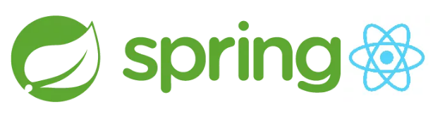

使用 Jenkins 和 Ansible 实现 CI/CD
现在是 2018 年。Kubernetes 在容器编排大战中取得了胜利。我们中的一些人怀着羡慕的心情阅读着硅谷创业公司的那些文章（是的，或许你所在的城市已经有了这些创业公司了！），然而读完之后还是回到自己手上运行得还可以的遗留的老系统上工作。
基于主干开发，容器部署至云上，这些虽然都在 DevOps 未来的规划中，但是短期内这些还基本无法落地。
向 DevOps 方向迈出的一步是要消除孤岛（dev，QA，ops），因此我们必须以一种每个角色都能轻松协作的方式来构建我们的代码。
我阅读了很多非常不错的文章，介绍如何使用一些单页面 Javascript 和 Spring Boot 后端构建应用，其中还涉及了配置管理、基础框架、持续集成和持续交付。现在我将结合以上所有内容，为你开展自己的工作提供一些支持和帮助。
准备
我准备了一个 Jenkins 实例，部署了 ssh， 以及一个可运行的 Spring Boot jar，还有一台 RedHat7 的虚拟机，和 Nexus 的制品仓库。所以我想我很高兴不用再部署 EARs 了。
现在我将使用以上的工具构建一个部署流水线，并对所有内容做版本控制，以便团队中的每个人都可以访问所有内容，并了解他们的代码从提交到部署的每个环节（本例中只是到测试环境）。
代码结构如下：
parent
+- backend
+- frontend
+- deployment
Jenkinsfile
简单起见，backend——一个简单的 Spring Boot 应用——包含了前端 ReactJS 应用，deployment 中是持续交付相关工具，根目录下的 Jenkinsfile 是这个流水线的声明式描述。

下面我们看一下每个模块！
后端
它继承自 Spring Boot parent：
<parent>
<groupId>org.springframework.boot</groupId>
<artifactId>spring-boot-starter-parent</artifactId>
<version>2.0.3.RELEASE</version>
<relativePath/>
</parent>
我们将 frontend 应用放在 dependencies：
<dependencies>
...
<dependency>
<groupId>com.company.skeleton</groupId>
<artifactId>frontend</artifactId>
<version>0.0.1-SNAPSHOT</version>
</dependency>
...
</dependencies>
我还使用了 Spotbugs，Checkstyle 和 Jacoco 来做静态代码检查和代码覆盖率检查，所以我们也将这些插件添加进来。需要注意的是安全插件 Spotbugs 是一个小的安全防护左移。
<build>
<plugins>
<plugin>
<groupId>org.springframework.boot</groupId>
<artifactId>spring-boot-maven-plugin</artifactId>
<configuration>
<executable>true</executable>
</configuration>
</plugin>
<plugin>
<groupId>com.github.spotbugs</groupId>
<artifactId>spotbugs-maven-plugin</artifactId>
<version>3.1.3.1</version>
<configuration>
<effort>Max</effort>
<threshold>Low</threshold>
<failOnError>true</failOnError>
<plugins>
<plugin>
<groupId>com.h3xstream.findsecbugs</groupId>
<artifactId>findsecbugs-plugin</artifactId>
<version>LATEST</version>
</plugin>
</plugins>
</configuration>
</plugin>
<plugin>
<groupId>org.apache.maven.plugins</groupId>
<artifactId>maven-checkstyle-plugin</artifactId>
<version>3.0.0</version>
</plugin>
<plugin>
<groupId>org.jacoco</groupId>
<artifactId>jacoco-maven-plugin</artifactId>
<version>0.8.1</version>
<configuration>
<fileSets>
<fileSet>
<directory>${project.build.directory}</directory>
<includes>
<include>*.exec</include>
</includes>
</fileSet>
</fileSets>
</configuration>
<executions>
<execution>
<id>default-prepare-agent</id>
<phase>process-classes</phase>
<goals>
<goal>prepare-agent</goal>
</goals>
<configuration>
<destFile>${project.build.directory}/jacoco.exec</destFile>
</configuration>
</execution>
<execution>
<id>pre-integration-test</id>
<phase>pre-integration-test</phase>
<goals>
<goal>prepare-agent</goal>
</goals>
<configuration>
<destFile>${project.build.directory}/jacoco-it.exec</destFile>
<propertyName>failsafeArgLine</propertyName>
</configuration>
</execution>
<execution>
<id>post-integration-test</id>
<phase>post-integration-test</phase>
<goals>
<goal>report</goal>
</goals>
<configuration>
<dataFile>${project.build.directory}/jacoco-it.exec</dataFile>
<outputDirectory>${project.reporting.outputDirectory}/jacoco-it</outputDirectory>
</configuration>
</execution>
</executions>
</plugin>
<plugin>
<groupId>pl.project13.maven</groupId>
<artifactId>git-commit-id-plugin</artifactId>
</plugin>
</plugins>
</build>
下面我们来看前端部分。
前端
由于需要一个可以作为 Maven 依赖项的库，我们将构建资源复制到 jar 的 public 目录，作为 maven-resources-plugin。
但是首先我们需要构建和测试这个模块。我们会使用 frontend-maven-plugin 完成这两步。如果不喜欢 maven 方式，也可以使用脚本，或者直接使用 Jenkinsfile 完成构建和测试。
<build>
<plugins>
<plugin>
<artifactId>maven-resources-plugin</artifactId>
<version>3.0.2</version>
<executions>
<execution>
<id>prepare-package</id>
<phase>prepare-package</phase>
<goals>
<goal>copy-resources</goal>
</goals>
<configuration>
<outputDirectory>${basedir}/target/classes/public</outputDirectory>
<resources>
<resource>
<directory>${project.basedir}/build</directory>
</resource>
</resources>
</configuration>
</execution>
</executions>
</plugin>
<plugin>
<groupId>com.github.eirslett</groupId>
<artifactId>frontend-maven-plugin</artifactId>
<version>1.6</version>
<executions>
<execution>
<id>install node and yarn</id>
<goals>
<goal>install-node-and-yarn</goal>
</goals>
<configuration>
<nodeVersion>v9.9.0</nodeVersion>
<yarnVersion>v1.5.1</yarnVersion>
</configuration>
</execution>
<execution>
<id>yarn</id>
<goals>
<goal>yarn</goal>
</goals>
<phase>prepare-package</phase>
<configuration>
</configuration>
</execution>
<execution>
<id>yarn build</id>
<goals>
<goal>yarn</goal>
</goals>
<phase>prepare-package</phase>
<configuration>
<arguments>build</arguments>
</configuration>
</execution>
<execution>
<id>test</id>
<goals>
<goal>yarn</goal>
</goals>
<phase>test</phase>
<configuration>>
<arguments>test</arguments>
<environmentVariables>
<CI>true</CI>
</environmentVariables>
</configuration>
</execution>
</executions>
</plugin>
</plugins>
</build>
现在我们使用 Jenkins 来完成所有构建步骤！
Jenkinsfile
我们将创建如下流水线：
我们使用声明式流水线。
在 Build stage，我们并行构建前端和后端。
当然我们需要注意后端是依赖于前端模块产生的制品的，因此在以上两个并行的构建完成后，我们必须用另一个步骤来创建可运行的 jar，本次我们先跳过测试环节。
pipeline {
agent { label 'RHEL' }
tools {
maven 'Maven 3.3.9'
jdk 'jdk1.8.0'
}
stages {
stage('Build') {
parallel {
stage('Build Backend'){
steps {
dir('backend'){
sh 'mvn clean test spotbugs:spotbugs checkstyle:checkstyle'
}
}
post {
always {
junit 'backend/target/surefire-reports/*.xml'
findbugs canComputeNew: false, defaultEncoding: '', excludePattern: '', healthy: '', includePattern: '', pattern: '**/spotbugsXml.xml', unHealthy: ''
checkstyle canComputeNew: false, defaultEncoding: '', healthy: '', pattern: '**/checkstyle-result.xml', unHealthy: ''
jacoco()
}
}
}
stage('Build Frontend'){
steps {
dir('frontend'){
sh 'mvn clean install'
}
}
}
}
}
stage('Create runnable jar'){
steps {
dir('backend'){
sh 'mvn deploy -DskipTests'
}
}
}
}
}
你或许已经注意到了，我用的是 mvn deploy，而不是 mvn install，这是因为我们使用了 Nexus 制品仓库。
Nexus 是我们唯一存储构建制品的仓库，也是我们所有环境拉取制品的地方。
制品仓库需要定义在后端的 pom.xml 文件中。
<distributionManagement>
<repository>
<uniqueVersion>true</uniqueVersion>
<id>Releases</id>
<layout>default</layout>
<url>http://nexus.edudoo.com/</url>
</repository>
<snapshotRepository>
<uniqueVersion>false</uniqueVersion>
<id>Snapshots</id>
<layout>default</layout>
<url>http://nexus.edudoo.com/</url>
</snapshotRepository>
</distributionManagement>
部署
前面提到过我们有一台 RedHat7 虚拟机且可以通过 ssh 连接。我们使用的 Ansible 工具需要 ssh 连接，所以需要安装到 Jenkins 节点上。

另一个需要决定的是如何运行我们的应用程序。我们可以通过编写 shell 脚本来启停 java jar，但更为优雅的一种方式是使用进程/服务管理器。
我们可以选择使用 Supervisor 或者其它的一些工具，但是这些工具在 RedHat Linux 上不能开箱即用，所以我们选择使用 systemd。
每次执行的步骤如下：
准备环境，安装所需要的包
准备以及推送应用的配置
从 Nexus 拉取 jar
创建（或者更新）和启动（或者重启）systemd 服务
我们所说的搭建环境是指包已更新，且安装了 java。这些定义在 common 角色中：
- name: Ensure kernel is at the latest version
yum: name=kernel state=latest
- name: Install latest Java 8
yum: name=java-1.8.0-openjdk.x86_64 state=latest
其它步骤定义在 deploy 角色中。首先，将 jar 下载到 /opt 下的目录中：
- name: Create skeleton directory
file: path=/opt/skeleton state=directory
- name: Download skeleton runnable jar
get_url:
url: http://nexus.edudoo.com/artifact/maven/content?g=com.edudoo.skeleton&a=backend&v=0.0.1-SNAPSHOT&r=snapshots
dest: /opt/skeleton/skeleton.jar
backup: yes
force: yes
配置管理部分如下所示：
- name: Ensure app is configured
template:
src: application.properties.j2
dest: /opt/skeleton/application.properties
- name: Ensure logging is configured
template:
src: logback-spring.xml.j2
dest: /opt/skeleton/logback-spring.xml
Spring boot 应用的配置在 application.properties 文件中，且和可执行 jar 放在同一目录中。修改上面 template 的内容，可以适用于不同的环境。
下面我们看一下 template 本身：
server.port={{skeleton_port}}
logging.config=/opt/skeleton/logback-spring.xml
logging.file=/opt/skeleton/skeleton.log
当运行 ansible 脚本时，skeleton_port 将被替换成指定的值。我们稍后再讲这部分。
（日志配置于此类似。）
最后是 service 部分：
- name: Install skeleton systemd unit file
template: src=skeleton.service.j2 dest=/etc/systemd/system/skeleton.service
- name: Start skeleton
systemd: state=restarted name=skeleton daemon_reload=yes
Template 中现在还没有任何变量（但是可以使用例如 java 参数来动态控制内存消耗）：
[Unit]
Description=Skeleton Service
[Service]
User=root
WorkingDirectory=/opt/skeleton/
ExecStart=/usr/bin/java -Xmx256m -jar skeleton.jar
SuccessExitStatus=143
TimeoutStopSec=10
Restart=always
RestartSec=5
[Install]
WantedBy=multi-user.target
最后用 inventory 文件（如 dev-servers）来定义环境：
[test]
11.22.33.44
[prod]
11.22.33.45
11.22.33.46
以及一个 playbook（site.yml）来定义所有的步骤：
---
- hosts: test
remote_user: clouduser
roles:
- common
- deploy
vars:
- skeleton_port: 80
我们在这里给变量 skeleton_port 指定了值，这个值将替换到 application.properties 文件的 template 中。
现在我们将 Ansible 的相关步骤加到 Jenkinsfile 中：
...
stage('Deploy to test'){
steps {
dir('deployment'){ //do this in the deployment directory!
echo 'Deploying to test'
sh 'ansible-playbook -i dev-servers site.yml'
}
}
}
...
现在我们需要把所有东西提交到一个 git 仓库，以及让 Jenkins 知道从哪儿可以获取 Jenkinsfile。
配置 Jenkins
在 Jenkins 上创建一个新的 Multibranch 类型流水线。在配置页面唯一需要配置的就是 source：
保存配置、运行，并开始享受吧！